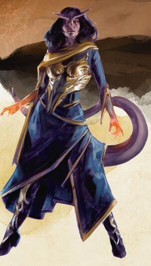

Tieffelin
Être accueilli par des regards suspicieux et des murmures, souffrir insultes et violences à chaque coin de rue, croiser le doute et la peur dans chaque regard, tel est le lot quotidien du tieffelin. Et pour remuer le couteau dans la plaie, les tieffelins ont conscience que tout cela vient d'un pacte passé il y a plusieurs générations qui imprégna leur lignée de l'essence d'Asmodée, le seigneur des Neuf enfers. Leur apparence et leur nature ne sont pas le fruit de leur volonté, mais la conséquence d'un péché ancien duquel eux-mêmes, leurs enfants et toute leur descendance, seront toujours redevables.
Lignée infernale
« Mais tu vois la manière dont les autres te regardent, enfant du diable ». Ces grands yeux noirs, froid comme une tempête de neige, toisaient directement son cœur et le soudain sérieux dans sa voix l'ébranla. « Que peuvent-ils en dire ? » demanda t'il. « Qu'un seul, c'est une curiosité, que deux, c'est une conspiration »
« Et que trois, c'est une malédiction » finit t'elle. « Tu crois que c'est la première fois que j'entend ce discours stupide ? »
« Non, je sais ».
Quand il croisa son regard furieux, il ajouta « Ce n'est pas comme si que je sondais le fond de ton esprit, chère enfant. C'est le fardeau que tout tieffelin se doit de porter. Certains l'ignorent, certains en font leur fierté, et d'autres se révèlent grâce à lui ». Il pencha encore sa tête, la jaugeant, avec cette étincelle dans le regard. « Tu le combats, n'est ce pas ? Comme une petite chatte sauvage, j'en prend le pari. Le moindre accroc et le moindre commentaire est prétexte à affûter tes griffes ».
- Erin M. Evans, Brimstone Angels
Les tieffelins descendent d'une lignée humaine et, dans l'absolu, ils ressemblent toujours aux humains. Malgré tout, leur héritage infernal a laissé une marque claire et indélébile sur leur apparence. Les tieffelins possèdent comme attribut le plus marquant de larges cornes, qui peuvent apparaître sous une grande variété de formes : certains ont les cornes courbées d'un bélier, d'autres les longues cornes d'une gazelle, et d'autres encore ont les cornes en spirales de l'antilope. Ils ont aussi une fine queue mesurant entre 120 et 150 centimètres de long qui fouette l'air ou s’enroule autour de leurs jambes quand ils deviennent agacés ou nerveux. Leurs canines sont particulièrement pointues et leurs yeux d'une couleur unique – noirs, jaunes, argent ou or – sans sclère ni pupille discernable. La couleur de leur peau couvre toute la palette des couleurs humaines, mais intègre aussi plusieurs nuances de rouges. Leurs cheveux, descendants de derrière leurs cornes, sont généralement sombres, plutôt noirs ou bruns, ou parfois rouge sombre, bleu ou pourpre.
Autonomes et prudents
Les tieffelins survivent en petites minorités que l'on trouve généralement dans les cités et les villes humaines, la plupart du temps dans les quartiers les plus difficiles au sein desquels ils grandissent pour devenir des escrocs, des voleurs ou des seigneurs du crime. Il arrive parfois qu'ils vivent dans des enclaves aux côtés d'autres minorités parmi lesquelles ils trouvent plus de respect.
N'ayant pas de nations, les tieffelins savent qu'ils doivent se faire leur place dans ce monde et se montrer forts pour survivre. Ils ne sont pas prompts à faire confiance à ceux qui se revendiquent être leurs amis, mais quand un de leurs compagnons lui montre la confiance qu'il lui porte, le tieffelin lui rend toujours cette confiance. Et quand un tieffelin a donné sa loyauté, il sera à vie un ami solide ou un allié fiable.
Noms tieffelins
DÉFIANCE RÉCIPROQUE
Les gens ont tendance à se montrer prudents avec les tieffelins, jugeant que leur héritage infernal a laissé sa trace sur leur personnalité et leur moralité autant que sur leur apparence. Les commerçants gardent un œil attentif sur leurs biens quand un tieffelin entre dans leur boutique, la garde d'une ville pourra suivre un moment un tieffelin, et les démagogues blâment les tieffelins présents pour chaque événement qui sort de l'ordinaire.
La réalité, cependant, est que ce lignage n'affecte pas leur personnalité à un tel degré. Des années à gérer la défiance a laissé des marques sur la plupart des tieffelins, et ils y répondent de manières variées. Certains adoptent les pires traits des stéréotypes, là ou d'autres montrent à l'opposé leur vertu. La plupart sont très conscients de la manière dont on les perçoit depuis leur jeunesse, et dépassent le préjudice par le charme ou l'intimidation.
Les noms tieffelins se classent en trois grandes catégories. Les tieffelins nés dans une culture particulière portent généralement des noms issus de cette culture. D'autres portent des noms dérivés de l'infernal, transmis à travers les générations et qui reflètent cet héritage maudit. Enfin, certains jeunes, soucieux de se trouver une place dans le monde, adoptent un nom qui représente une vertu ou un autre concept, et tentent ensuite de personnifier ce concept. Pour certains c'est une noble quête. Pour d'autres, une sinistre destinée.
Nom infernaux masculins : Akmenos, Amnon, Barakas, Damakos, Ekemon, Iados, Kairon, Leucis, Melech, Mordai, Morthos, Pelaios, Skamos, Therai.
Nom infernaux féminins : Akta, Anakis, Bryseis, Criella, Damaia, Ea, Kallista, Lerissa, Makaria, Nemeia, Orianna, Phelaia, Rieta.
Nom de « vertu » : Art, Chagrin, Chant, Charogne, Credo, Désespoir, Espoir, Excellence, Gloire, Hasard, Idéal, Lassitude, Musique, Nulle-part, Ouverture, Poésie, Quête, Révérence, Témérité, Terreur, Tourment.
Traits
Les tieffelins partagent certains traits raciaux comme résultat de leur ascendance infernale.
Augmentation de caractéristiques. Votre Intelligence augmente de 1 et votre Charisme de 2.
Âge. Les tieffelins vieillissent au même rythme que les humains, mais ont une espérance de vie un peu plus longue.

Taille. La taille et la corpulence des tieffelins sont similaires à celles des humains. Votre taille est Moyenne (M).
Vitesse. Votre vitesse de base est de 9 mètres.
Vision dans le noir. Grâce à votre héritage infernal, vous avez une vision supérieure dans le noir et les conditions de faible éclairage. Vous pouvez voir à 18 mètres dans une lumière faible comme vous verriez avec une lumière vive, et dans le noir comme vous verriez avec une lumière faible. Dans le noir, vous ne discernez pas les couleurs, uniquement des nuances de gris.
Résistance infernale. Vous avez la résistance aux dégâts de feu.
Ascendance infernale. Vous connaissez le sort mineur thaumaturgie. Quand vous atteignez le niveau 3, vous pouvez lancer le sort représailles infernales comme un sort de niveau 2 une fois avec ce trait et regagnez cette capacité lorsque vous terminez un repos long. Quand vous atteignez le niveau 5, vous pouvez lancer le sort ténèbres une fois avec ce trait et regagnez cette capacité lorsque vous terminez un repos long. Le Charisme est votre caractéristique d'incantation pour ces sorts.
Langues. Vous pouvez parler, lire et écrire le commun et l'infernal.
Traduit par ben